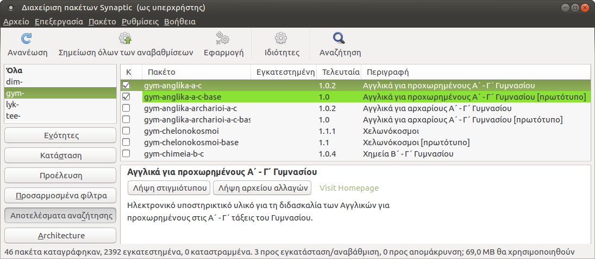

Συνεισφορές¶
Για τη συγγραφή των markdown αρχείων .md ακολουθούνται οι ίδιοι κανόνες με
το LTSP Project:
Italics¶
Παράδειγμα σύνταξης:
*κείμενο*
Αποτέλεσμα:
κείμενο
Bold¶
Παράδειγμα σύνταξης:
**κείμενο**
Αποτέλεσμα:
κείμενο
Αρίθμηση¶
Παράδειγμα σύνταξης:
1. κείμενο1
2. κείμενο2
1. κείμενο3
2. κείμενο4
3. κείμενο5
Αποτέλεσμα:
- κείμενο1
- κείμενο2
- κείμενο3
- κείμενο4
- κείμενο5
Κουκκίδες¶
Παράδειγμα σύνταξης:
- κείμενο1
- κείμενο2
- κείμενο3
- κείμενο4
- κείμενο5
Αποτέλεσμα:
- κείμενο1
- κείμενο2
- κείμενο3
- κείμενο4
- κείμενο5
Συμβουλή
Για λόγους συμβατότητας με διάφορα πρότυπα σύνταξης markdown, να χρησιμοποιούνται πάντα τέσσερα (4) κενά από την αρχή της αρίθμησης/κουκκίδας μέχρι το πρώτο γράμμα του κειμένου:
1.␣␣κείμενο
-␣␣␣κείμενο
Πληροφορία
Από προεπιλογή στις αριθμήσεις/κουκκίδες εφαρμόζεται wrapping π.χ. όταν
προηγείται εικόνα. Αν όμως θέλετε να απενεργοποιήσετε το wrapping σε
συγκεκριμένη αρίθμηση/κουκκίδα, ώστε να καλύπτει όλο το πλάτος της
σελίδας, τότε πρέπει στο τέλος της, να προσθέσετε το λεκτικό {.clear}.
Πίνακας¶
Παράδειγμα σύνταξης:
| Επικεφαλίδα1 | Επικεφαλίδα2 | Επικεφαλίδα3 |
|:------------:|:------------:|:------------:|
| κείμενο1 | κείμενο3 | κείμενο6 |
| 〃 | κείμενο4 | κείμενο7 |
| 〃 | 〃 | κείμενο8 |
| κείμενο2 | κείμενο5 | κείμενο9 |
Αποτέλεσμα:
| Επικεφαλίδα1 | Επικεφαλίδα2 | Επικεφαλίδα3 |
|---|---|---|
| κείμενο1 | κείμενο3 | κείμενο6 |
| 〃 | κείμενο4 | κείμενο7 |
| 〃 | 〃 | κείμενο8 |
| κείμενο2 | κείμενο5 | κείμενο9 |
Συμβουλή
- Για τη δημιουργία πίνακα μπορείτε να χρησιμοποιήσετε το online λογισμικό: Tables Generator.
- Όταν θέλετε να δημιουργήσετε πολύπλοκους πίνακες στους οποίους το
περιεχόμενο των γραμμών επαναλαμβάνεται μπορείτε να χρησιμοποιήσετε το
σύμβολο ditto mark:
〃. Μπορείτε να το αντιγράψετε και από τον πίνακα του παραδείγματος.
Εντολή, όνομα αρχείου, τμήματα τερματικού/αρχείου¶
`εντολή` (όπου ` βάζουμε backticks)
Παράδειγμα σύνταξης:
`gparted`
Αποτέλεσμα:
gparted
Μενού και GUI ετικέτες¶
***κείμενο*** ▸
Παράδειγμα σύνταξης:
***Εφαρμογές*** ▸ ***Εργαλεία συστήματος*** ▸ ***GParted***
Αποτέλεσμα:
Εφαρμογές ▸ Εργαλεία συστήματος ▸ GParted
Συμβουλή
Για λόγους αισθητικής αλλά και wrapping πριν και μετά το ▸ να μπαίνει κενό.
Περιγραφή πλήκτρων¶
**`όνομα πλήκτρου`**+
Παράδειγμα σύνταξης:
**`Alt`**+**`Ctrl`**+**`T`**
Αποτέλεσμα:
Alt+Ctrl+T
Ενέργειες με το ποντίκι¶
-
Όταν συνδιάζεται με πλήκτρο:
**`Ctrl`**+**`κλικ`**Αποτέλεσμα:
Ctrl+κλικ -
Όταν συνδιάζεται με μενού:
***δεξί κλικ*** ▸ ***Ιδιότητες***Αποτέλεσμα:
δεξί κλικ ▸ Ιδιότητες
-
Σε διαφορετική περίπτωση ΔΕΝ είναι απαραίτητη κάποια μορφοποίηση.
Admonitions¶
Παράδειγμα σύνταξης:
!!! tip "Συμβουλή"
εδω περιγράφουμε τη συμβουλή (προσέχουμε τη στοίχιση με το tip).
Αποτέλεσμα:
Συμβουλή
εδω περιγράφουμε τη συμβουλή (προσέχουμε τη στοίχιση με το tip).
Πληροφορία
-
Αντί για tip "Συμβουλή" μπορείτε να χρησιμοποιήσετε:
!!! info "Πληροφορία"!!! warning "Προσοχή"
Περισσότερα λεκτικά στο Admonitions - Supported types.
-
Μπορείτε να δημιουργήσετε admonitions χωρίς τίτλο, π.χ.
!!! tip "" -
Από προεπιλογή στα admonitions εφαρμόζεται wrapping π.χ. όταν προηγείται εικόνα. Αν όμως θέλετε να απενεργοποιήσετε το wrapping σε συγκεκριμένο admonition, ώστε να καλύπτει όλο το πλάτος της σελίδας, τότε πρέπει να προσθέσετε το λεκτικό
clear, π.χ.!!! tip clear "Συμβουλή"
Τερματικό¶
Παράδειγμα σύνταξης:
```shell
εδώ γράφουμε τις εντολές
```
Αποτέλεσμα:
εδώ γράφουμε τις εντολές
Τερματικό με αποτελέσματα¶
Παράδειγμα σύνταξης:
```shell-session
$ μπορούμε να χρησιμοποιήσουμε το $
# όπως και το #
αλλά να δούμε
και το αποτέλεσμα των εντολών
```
Αποτέλεσμα:
$ μπορούμε να χρησιμοποιήσουμε το $
# όπως και το #
αλλά να δούμε
και το αποτέλεσμα
των εντολών
Περιεχόμενο αρχείου¶
Παράδειγμα σύνταξης:
```text title="όνομα αρχείου"
σε αυτές τις γραμμες
εμφανίζονται τα περιεχόμενα
του αρχείου
```
Αποτέλεσμα:
σε αυτές τις γραμμες
εμφανίζονται τα περιεχόμενα
του αρχείου
Εισαγωγή εικόνας¶
Παράδειγμα σύνταξης:

Αποτέλεσμα:

Εικόνα με link σε URL¶
Παράδειγμα σύνταξης:
[](https://ts.sch.gr/wiki/linux/ubuntu/software/#χρήση-του-synaptic)
Αποτέλεσμα:
Εικόνα δεξιά σε κείμενο¶
Παράδειγμα σύνταξης:
[](synaptic.png)
Η εκτέλεση του Synaptic γίνεται από το μενού
***Σύστημα*** ▸ ***Διαχείριση συστήματος*** ▸ ***Διαχείριση πακέτων Synaptic***.
Για να αναζητήσετε το λογισμικό που σας ενδιαφέρει,
χρησιμοποιήστε το κουμπί ***Αναζήτηση*** της γραμμής εργαλείων.
Αποτέλεσμα:
Η εκτέλεση του Synaptic γίνεται από το μενού Σύστημα ▸ Διαχείριση συστήματος ▸ Διαχείριση πακέτων Synaptic. Για να αναζητήσετε το λογισμικό που σας ενδιαφέρει, χρησιμοποιήστε το κουμπί Αναζήτηση της γραμμής εργαλείων.
{kind=link}
Εικόνα ως μικρογραφία δεξιά σε κείμενο¶
Παράδειγμα σύνταξης:

Η εκτέλεση του Synaptic γίνεται από το μενού
***Σύστημα*** ▸ ***Διαχείριση συστήματος*** ▸ ***Διαχείριση πακέτων Synaptic***.
Για να αναζητήσετε το λογισμικό που σας ενδιαφέρει,
χρησιμοποιήστε το κουμπί ***Αναζήτηση*** της γραμμής εργαλείων.
Αποτέλεσμα:
 Η εκτέλεση του Synaptic γίνεται από το μενού
Σύστημα ▸ Διαχείριση συστήματος ▸ Διαχείριση πακέτων Synaptic.
Για να αναζητήσετε το λογισμικό που σας ενδιαφέρει,
χρησιμοποιήστε το κουμπί Αναζήτηση της γραμμής εργαλείων.
Η εκτέλεση του Synaptic γίνεται από το μενού
Σύστημα ▸ Διαχείριση συστήματος ▸ Διαχείριση πακέτων Synaptic.
Για να αναζητήσετε το λογισμικό που σας ενδιαφέρει,
χρησιμοποιήστε το κουμπί Αναζήτηση της γραμμής εργαλείων.
Εικόνα ως εικονίδιο μέσα σε κείμενο¶
Παράδειγμα σύνταξης:
Η εκτέλεση του Synaptic  γίνεται από το μενού
***Σύστημα*** ▸ ***Διαχείριση συστήματος*** ▸ ***Διαχείριση πακέτων Synaptic***.
Για να αναζητήσετε το λογισμικό που σας ενδιαφέρει,
χρησιμοποιήστε το κουμπί ***Αναζήτηση*** της γραμμής εργαλείων.
Αποτέλεσμα:
Η εκτέλεση του Synaptic  γίνεται από το μενού
Σύστημα ▸ Διαχείριση συστήματος ▸ Διαχείριση πακέτων Synaptic.
Για να αναζητήσετε το λογισμικό που σας ενδιαφέρει,
χρησιμοποιήστε το κουμπί Αναζήτηση της γραμμής εργαλείων.
γίνεται από το μενού
Σύστημα ▸ Διαχείριση συστήματος ▸ Διαχείριση πακέτων Synaptic.
Για να αναζητήσετε το λογισμικό που σας ενδιαφέρει,
χρησιμοποιήστε το κουμπί Αναζήτηση της γραμμής εργαλείων.
Προσοχή
Σε όλα τα παραδείγματα η εικόνα synaptic.png βρίσκεται στον ίδιο φάκελο με το contributing.md.
Σύμβολα ως εικόνες σε κείμενο ή πίνακα¶
Παράδειγμα σύνταξης:
Μπορείτε να προσθέσετε πράσινο ![✔][✔] ή και κόκκινο ![✖][✖] σύμβολο ως εικόνα, μέσα σε κείμενο ή πίνακα.
Αποτέλεσμα:
Μπορείτε να προσθέσετε πράσινο ή και κόκκινο σύμβολο ως εικόνα, μέσα σε κείμενο ή πίνακα.
Προσοχή
Στο τέλος του αρχείου, θα πρέπει να προσθέσετε τα σχετικά paths των αντίστοιχων εικόνων, όπως τα ακόλουθα παραδείγματα:
[link-reference-definitions]: https://github.github.com/gfm/#link-reference-definitions
[✔]: ../../images/v.svg
[✖]: ../../images/x.svg
[⋮]: ../../images/ellipsis-v-icon.svg
[≡]: ../../images/hamburger-icon.svg
Αναφορά σε .md αρχείο¶
Παράδειγμα σύνταξης:
[Εγκατάσταση Λογισμικού](../../ubuntu/software.md)
Αποτέλεσμα:
Πληροφορία
Όταν θέλουμε να αναφερθούμε σε Περιεχόμενα σελίδας συγκεκριμένου .md, τότε πρέπει να προσθέσουμε και την αντίστοιχη ενότητα.
Π.χ. για την ενότητα ## Χρήση του Synaptic:
Παράδειγμα σύνταξης:
[Εγκατάσταση Λογισμικού - Χρήση του Synaptic](../../ubuntu/software.md#χρήση-του-synaptic)
Αποτέλεσμα:
Χρήσιμο
Όταν θέλουμε να αλλάξουμε το προεπιλεγμένο path με το οποίο αναφερόμαστε σε συγκεκριμένη ενότητα, έτσι ώστε να παραχθεί και αντίστοιχο URL, τότε στον ορισμό της αντίστοιχης ενότητας προσθέτουμε στο τέλος: {#specified-a-name}.
Π.χ. Η αναφορά στην ενότητα Χρήση του Synaptic με διαφορετικό path, γίνεται ως εξής:
Στο software.md, η γραμμή ## Χρήση του Synaptic αλλάζει ως εξής:
## Χρήση του Synaptic {#use-of-synaptic}
Έτσι πλέον η αναφορά στην συγκεκριμένο αρχείο/ενότητα γίνεται ως εξής:
[Εγκατάσταση Λογισμικού - Χρήση του Synaptic](../../ubuntu/software.md#use-of-synaptic)
Εξωτερικός σύνδεσμος¶
-
Παράδειγμα σύνταξης:
<https://help.ubuntu.com/community/LiveCdRecovery#Lost_Password>Αποτέλεσμα:
https://help.ubuntu.com/community/LiveCdRecovery#Lost_Password
-
Παράδειγμα σύνταξης:
[LiveCdRecovery - Lost Password](https://help.ubuntu.com/community/LiveCdRecovery#Lost_Password)Αποτέλεσμα:
-
Αν θέλουμε να τονίσουμε έναν εξωτερικό σύνδεσμο με μορφή button τότε στο τέλος προσθέτουμε:
{.md-button}Παράδειγμα σύνταξης:
[LiveCdRecovery - Lost Password](https://help.ubuntu.com/community/LiveCdRecovery#Lost_Password){.md-button}Αποτέλεσμα:
Tests¶
Ignore these, they're just tests. You can see the source code on github.
Blockquote admonitions¶
NOTE Admonitions can be easily implemented with special links as the first lines of blockquotes. They can optionally use a two-space-break at EOL, so that they display better on github.
Σημείωση Since the CSS is based on the link and not on the link-reference text, localized text can be used for admonitions.
A note with a custom and even
formattedtitle
Additionally, custom titles can be used as well.
!NOTE Finally, by using e.g.
[!NOTE], they can support content that has been written for the Microsoft doc pack.